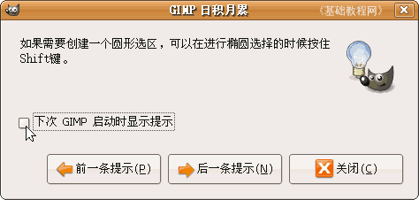
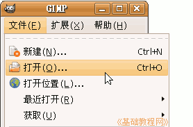
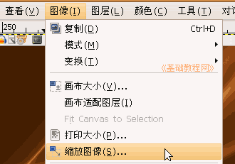
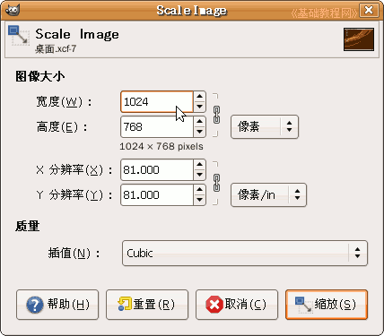
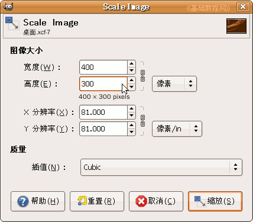
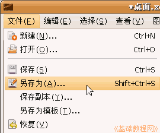
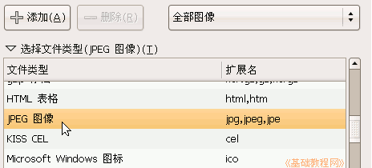
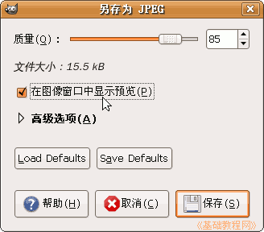
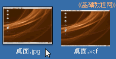

GIMP操作基础教程
作者：Teliute 来源：基础教程网
九、缩放图像 返回目录
有时候图片尺寸太大，这时候我们可以用GIMP来缩放一下，如果图片体积太大，也可以另存为JPEG格式来减小，下面我们来看一个练习；
1、启动GIMP
1）点上面板栏的菜单“应用程序－图像－GIMP图片编辑器”，就可以启动GIMP程序；
2）程序启动完成后，出来两个长条面板，如果还有一个“日积月累”面板，可以去掉下面的勾，点“关闭”；
2、缩放图像
1）点菜单“文件－打开..”命令，找到自己的文件夹，打开上次保存的“桌面.xcf”文件；
2）点菜单“图像－缩放图像..”命令，出来一个对话框；
 
3）把宽度改为 400 ，然后点一下高度，高度会自动缩小，因为右边有一个锁链是连着的；

点“缩放”按钮，完成缩放图像；
4）点菜单“文件－另存为”命令，注意是另存为三个字，出来一个保存对话框；

5）在保存面板的左下角，找到“选择文件类型”点击展开折叠列表，在里面选择JPEG图像格式，选好以后，再点上面的折叠按钮，折叠列表；

6）然后点“保存”按钮，出来一个优化选项，打勾“在图像窗口预览”，上面可以看一下图像的大小；

7）保持质量85不变，点“保存”按钮，就可以保存好一个JPEG格式的图片，使用JPEG格式的好处在于，可以大大减少图片的体积大小；

本节学习了GIMP中缩放和保存为JPEG图片的基本方法，如果你成功地完成了练习，请继续学习下一课内容；本教程由86团学校TeliuTe制作|著作权所有，商业用途请与作者联系
基础教程网：http://www.laxjyj.com/teliute/
美丽的校园……
转载和引用本站内容，请保留版权信息和本站链接。